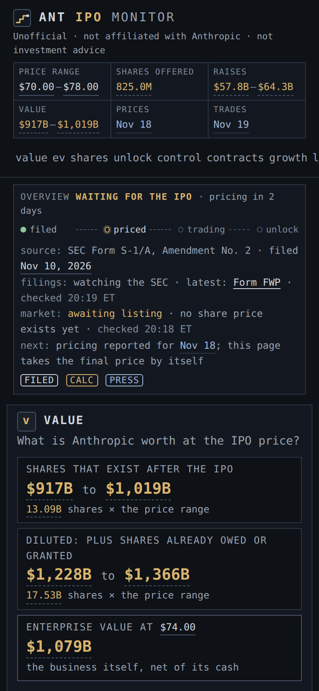

Loop 005 — antipo.watch: the dashboard on its own domain
Loop 005 — antipo.watch: the dashboard on its own domain
2026-11-17 · The page is now at antipo.watch, with a certificate, through Cloudflare. Nothing changed on the machine: a small Worker relays each request to the Fly.io app, whose address keeps working. The owner asked for every step to be recorded in their Second Brain, so that the Loop0 method can turn this first domain setup into an expert agent.
Why
You will help me set up a Cloudflare key for the domain I bought: antipo.watch. I would like us to configure the DNS on it. What matters most is that you record all your expertise in the Second Brain, so that Loop0 can convert it into an expert. We are setting up a DNS for the first time: a domain name, a certificate, all of it. All we need technically is the Cloudflare API key. The domain is registered; I moved it out of GoDaddy earlier, the name servers are there. Let's go.
The owner spoke in French; their words are reworded in English, with the meaning unchanged.
What changed

http://antipo.watch in Chromium at phone size: it lands on https://antipo.watch, the same page as before.- The path of a request: the reader's browser talks to Cloudflare, which holds a certificate for antipo.watch (Let's Encrypt, renewed by Cloudflare). A Worker sends the request on to the Fly.io app by its fly.dev name and returns the answer as it is.
- Why a relay: Fly.io refuses a secure connection for a name it holds no certificate for, and adding one needs access to Fly.io that this project does not have. Tried on the spot: with the name antipo.watch, Fly.io closes the connection; with its own name, it answers.
- Redirects:
http://andwww.go tohttps://antipo.watch, permanently. - The page reaches readers unchanged. The browser tests found three things Cloudflare adds by default: an analytics script injected into the page (the page promises no tracker, and its security policy blocked it), a robot check that refused anything that is not a browser (it would have broken link previews on social networks), and a rewriting of e-mail links. All three are off.
- Settings: HTTPS only, TLS 1.2 at least, strict checking of the certificate between Cloudflare and Fly.io.
What the key could do
One Cloudflare key, held by Agent Manager and never in the repository. It can change the antipo.watch zone and nothing else in the account, except one permission: publishing a Worker, which Cloudflare grants on the whole account only. The owner gave it for the deployment and removes it afterwards. Two things learned: Cloudflare's newer interface names permissions differently from its documentation, and its new role "Workers Editor" alone was refused for publishing; the older "Workers Scripts: Edit" worked.
Checks
| Check | Result | Evidence |
|---|---|---|
| Name servers propagated | passed | Cloudflare's and Google's public resolvers both answer with Cloudflare's name servers. |
| Certificate | passed | antipo.watch and *.antipo.watch, Let's Encrypt, valid to 2027-02-15. |
| Redirects | passed | http://antipo.watch/ and www.antipo.watch: 301 to https://antipo.watch, path and query kept. |
| Health and data through the domain | passed | /health: version 0.6.1, 340 facts, 159 checks, filings ok; /stats answers. |
| Real-browser tests against antipo.watch | passed | 14 in Chromium, after the three Cloudflare additions were turned off (the first run failed on them). |
| Load time under one second | passed, barely | The relay adds about half a second before the first byte. With versioned files kept at Cloudflare, the test passed 2 times out of 3 when run alone, and in the full run. |
| Unit tests, lint | passed | No change to the service. |
| Opened on the owner's phone | not_run | Only the owner can. |
What is left
- The owner removes the Workers permissions from the key.
- Posts on X use antipo.watch.
- Later, if Fly.io access becomes available: a Fly.io certificate for antipo.watch would remove the relay and its half second.